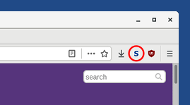
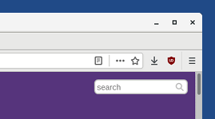
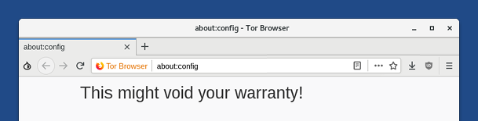
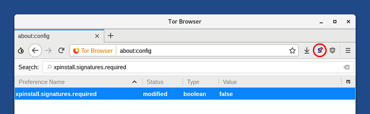
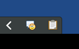
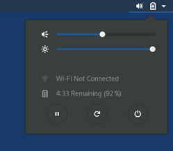
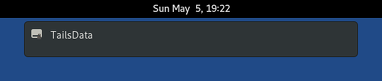

Esta versão é uma versão de emergência para corrigir uma vulnerabilidade de segurança crítica no Navegador Tor.
It also fixes other security vulnerabilities. You should upgrade as soon as possible.
Mudanças
Fixed NoScript activation in Tor Browser
Starting from Friday May 3, a problem in Firefox and Tor Browser disabled all add-ons. This release reactivates all add-ons in Tor Browser, especially NoScript which is used to:
Strengthen Tor Browser against some JavaScript attacks that can lead to compromised accounts and credentials on websites.
Enable or disable JavaScript on some websites using the NoScript interface, if you use it.
This issue still affects Tor Browser when it is restarted.
Avoid restarting Tor Browser.
Restart Tails instead or follow our instructions to reactivate NoScript without restarting Tails. See below.
Reactivate NoScript without restarting Tails
If NoScript is activated, the NoScript icon appears in the top-right corner and Tor Browser is safe:

If NoScript is deactivated, the NoScript icon is absent from the top-right corner and Tor Browser is unsafe:

To reactivate NoScript without restarting Tails, do the following:
Open the address about:config in Tor Browser.

Click the I accept the risk! button.
At the top of the page, search for xpinstall.signatures.required.
Double-click on the xpinstall.signatures.required line in the results to set its value to false.
Verify that NoScript is activated again.

Other upgrades and changes
Remove the OpenPGP Applet and Pidgin notification icons from the top navigation bar.

You can still access the OpenPGP Applet and Pidgin notification icons from the system tray in the bottom-left corner of the screen.
To display the system tray, move your mouse to the thin gray line in the bottom-left of the screen, above the window list:

To move these icons back to the top navigation bar, execute the following command in a Terminal:
gnome-shell-extension-tool --enable-extension=TopIcons@phocean.net
Until now, these icons were displayed in the top navigation bar by the TopIcons GNOME extension. This extension is unmaintained, causes GNOME to crash (#11188), and will not work in Tails 5.0 based on Debian 11 (Bullseye).
Install localization packages only for the following languages:
- Arabic
- English
- Farsi
- French
- German
- Hindi
- Indonesian
- Italian
- Portuguese
- Russian
- Simplified Chinese
- Spanish
- Turkish
You can install localization packages for other languages using the Additional Software feature.
Localization packages include:
- Thunderbird localization: packages thunderbird-l10n-lang
- LibreOffice localization: packages libreoffice-l10n-lang
- Spell-checking dictionaries: packages hunspell-lang
Where lang is the code for your language. For example, es for Spanish.
Add a suspend button to the system menu.

Add suspend, restart, and shutdown buttons to the system menu when the screen is locked.

Replace all non-Latin fonts with the Noto fonts family.
Update Debian to 9.9.
Update Thunderbird to 60.6.1.
Problemas resolvidos
Fix the automatic configuration of new email accounts in Thunderbird. (#16573)
Prevent Tails from shutting down when waking up from suspend on some computers. (#11729)
Fix the import of the Tails signing key in the Passwords and Keys utility. (##15213)
Don't show notifications about TailsData when configuring a persistent volume. (#16632)

Para mais detalhes, leia nosso changelog.
Problemas conhecidos
NoScript is deactivated when restarting Tor Browser
See how to reactivate NoScript without restarting Tails above.
Tails fails to start a second time on some computers (#16389)
On some computers, after installing Tails to a USB stick, Tails starts a first time but fails to start a second time. In some cases, only BIOS (Legacy) was affected and the USB stick was not listed in the Boot Menu.
We are still investigating the issue, so if it happens to you, please report your findings by email to tails-testers@boum.org. Mention the model of the computer and the USB stick. This mailing list is archived publicly.
To fix this issue:
Reinstall your USB stick using the same installation method.
Start Tails for the first time and set up an administration password.
Choose to open a Root Terminal.
Execute o seguinte comando:
sgdisk --recompute-chs /dev/bilibop
You can also test an experimental image:
Install it using the same installation methods.
We don't provide any OpenPGP signature or other verification technique for this test image. Please only use it for testing.
Veja a lista de problemas de longa data.
Get Tails 3.13.2
To upgrade your Tails USB stick and keep your persistent storage
Automatic upgrades are available from 3.12, 3.12.1, 3.13, and 3.13.1 to 3.13.2.
If you cannot do an automatic upgrade or if Tails fails to start after an automatic upgrade, please try to do a manual upgrade.
To install Tails on a new USB stick
Follow our installation instructions:
All the data on this USB stick will be lost.
To download only
If you don't need installation or upgrade instructions, you can directly download Tails 3.13.2:
O que vem por aí?
Tails 3.14 is scheduled for May 14.
Confira o nosso roadmap e veja nossos objetivos futuros.
We need your help and there are many ways to contribute to Tails (donating is only one of them). Come talk to us!